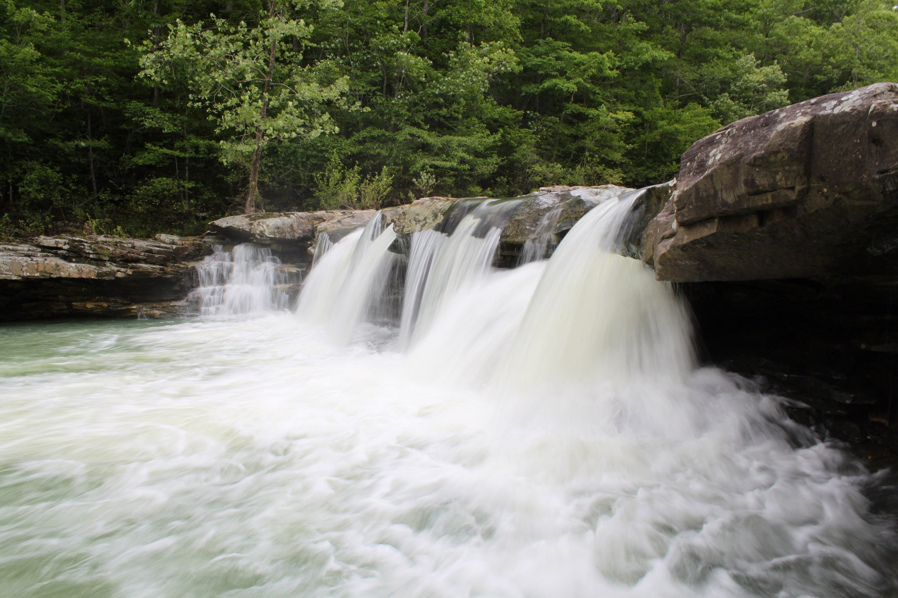
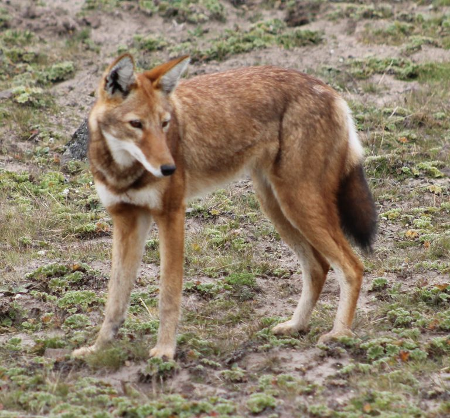
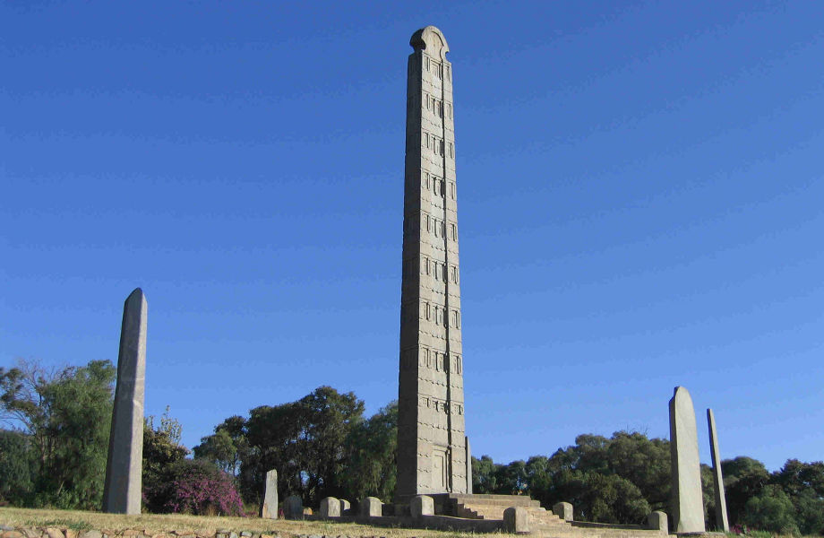

Ethiopia has three principal drainage systems.
The first and largest is the western drainage system,
which includes the watersheds of the Blue Nile (known as the Abay in Ethiopia),
the Tekeze, and the Baro rivers. All three rivers flow west to the White Nile in South Sudan and Sudan.
The second is the Rift Valley internal drainage system, composed of the Awash River, the Lakes Region, and the Omo River.
The Awash flows northeast to the Denakil Plain before it dissipates into a series of swamps and Lake Abe at the border with Djibouti.
The Lakes Region is a self-contained drainage basin, and the Omo flows south into Lake Turkana (Rudolf), on the border with Kenya.
The third system is that of the Shebele and Genale rivers. Both of these rivers originate in the Eastern Highlands and flow southeast
toward Somalia and the Indian Ocean. Only the Genale (known as the Jubba in Somalia) makes it to the sea; the Shebele (in Somali, Shabeelle)
disappears in sand just inside the coastline.

Animals Found Only In Ethiopia
Ethiopia is one of the most unique landscapes on Earth, with lush forests,
snow-capped peaks and arid deserts. As a country with such varied habitats,
Ethiopia is home to many species that cannot be found anywhere else on Earth,
whose endangered status highlights the need for environmental stewardship and a
radical re-imagining of how we co-exist with our environment. We tracked down ten
of these animals to show just what’s at stake.
The Ethiopia Wolf

The Ethiopian wolf is one of Earth’s rarest canid species, and unfortunately Africa’s most endangered carnivore.
Walia Ibex
Only 500 Walia Ibex still exist in the Semien Mountains of Ethiopia, both due to poaching and habitat loss.
Numbers were actually lower in the 90’s, but constant efforts from Semien Park’s mountain rangers
to create protected wildlife corridors have allowed numbers to rebound, with hope for the future.
The Yellow Fronted Parrot
Little is known about this parrot due to its limited habitat near lake Tana in the Ethiopian highlands.
Gelada Baboons
These Baboons can be found in huge numbers throughout the Simien Mountains.
They are sometimes called the Bleeding Heart Monkey due to the unique red
skin patch each has on their chests. They are very social animals, and will
typically be spotted in huge family groups
Historical Places
Aksum

AxumEthiopia's most ancient city and the capital of the historic Axumite state, is the site of many remarkable monolithic stone stelae,
or obelisks, the three most important being decorated to represent multi-storied buildings, complete with doors and windows.
The largest obelisk, which was 35 meters long and weighed 500 tons, is the biggest piece of
stone ever cut by humanity anywhere in the world but today it lies broken on the ground.
Near it stands a smaller but nevertheless most impressive 24-metre-high obelisk - the pride of Ethiopia.
A somewhat larger obelisk was taken to Rome, on the orders of the Italian fascist dictator Benito Mussolini, in 1937,
but its return to Axum is expected. Plans are also under consideration for the re-erection of the fallen obelisk.
Nejash Mosque
The Negash or Al-Nejashi Mosque is as old as the faith of Islam
Negash, Ethiopia’s first Islamic settlement, was established in the 7th century AD by Muslim refugees who escaped persecution in Mecca,
including close relatives of Prophet Mohammed, during his lifetime. The tombs of 15 of the original settlers are protected in a new mosque.
Al-Nejashi is considered by many as one of the most sacred places of Islamic worship and rightly dubbed by some as “The 2nd Mecca”.
The Ethiopian Christian king’s generosity, his refusal to betray the first small community of Muslims to their Meccan persecutors,
his befriending of and correspondence with the Prophet, and his contribution to the latter’s victory, left a special message of gratitude for
Islam and presented Ethiopia as a model of universal humanity and grace